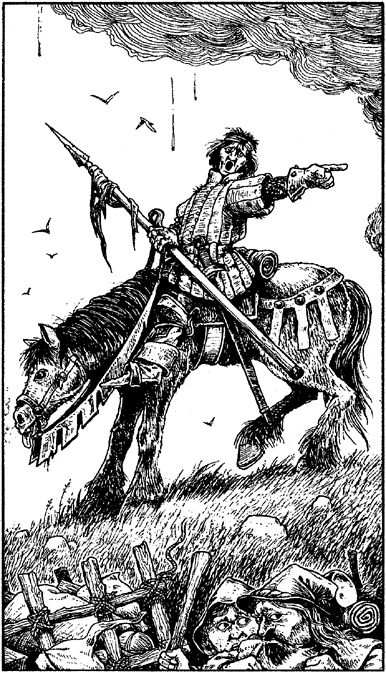

24
In the distance you see a pall of dense, black smoke rising into the sky. At its base a fortress wall and a cluster of cottages are feeding the greedy flames. Syada burns. To the north of the doomed town an army of black-clad troops covers the hills. The black wolf-head banners of Ogia sway on long poles, fluttering grimly above the ranks of the merciless horde.
Along the track a great procession of men, women, and children come towards you, some on horseback, some in carts, and some with bundles of possessions clutched to their soot-blackened chests. They stumble forward in silence, their eyes filled with terror and despair.
A soldier, bleeding from a wound to his head, rides past the crest shouting, ‘Turn back! Turn back! The armies of darkness are coming!’

It is impossible to continue along the track northwards. The dirt road is blocked with refugees from Syada, and the Ogian horde are poised to launch an attack from the hills. Only two courses of action are left open to you: you can turn back along the track, or you can ride west, across the hills towards the Mordril Forest. Consult the map before making your decision.
If you wish to ride west, turn to 311.
If you decide to turn back along the track, turn to 276.